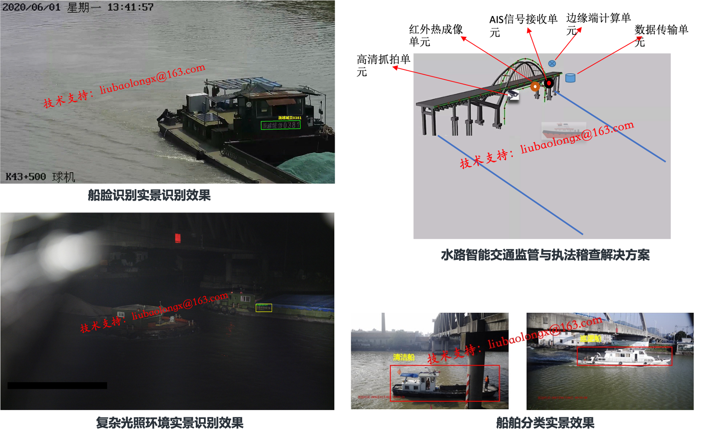

个人简介
刘宝龙，男，计算机科学与技术工学博士，2018年毕业于浙江大学，浙江工商大学计算机科学与技术学院教师。中国图象图形学学会交通视频专委会委员、中国计算机学会YOCSEF杭州学术委员、中国图学学会可视化与认知计算专委会委员。主要研究方向为水路智能交通、自然场景文本识别、计算机视觉、深度学习。以第一作者或唯一通讯作者在国内外著名学术期刊和会议发表论文10余篇，发明专利10余项，参与或主持国家重点研发计划项目、国家自然科学基金、浙江省自然科学基金和部属实验室开放课题等科研项目4项。担任IEEE TNNLS、FITEE等国际期刊审稿人。曾在阿里巴巴集团工作3年、担任人工智能方面的算法专家，具有较丰富的工业场景算法研发和落地应用经验。
水路智能交通研究
本人长期致力于水路航道智能运载及感知算法与技术研究，博士论文是第一篇较为系统地研究基于视觉智能的船名标识字符检测与识别的博士论文，该论文至今累计下载超5000次，被引用54次。近年来围绕该方向，研究基于可见光图像的船舶检测、船舶分类、船牌识别、船脸识别和船舶追踪检索算法，还在基于红外或热成像的船舶检测、船舶分割、船舶追踪等技术方面有一定积淀。当前，积累了大量船舶精细化标注数据集，用以进行算法的训练与迭代。相关技术先后以国际期刊和会议论文、发明专利等形式进行了公开。相关技术在不同地方的不同河道与卡口进行了测试部署，取得了良好的应用效果。
通过部署多种感知设备，对特定卡口进行视频监控、红外、热成像、AIS信号等信息全面采集；基于自研先进人工智能算法及技术，对多设备多源信息进行快速计算处理，以获取船名、船型、航向、船员、AIS及其他高维特征信息，完成高精度船脸识别；运用智能挖掘分析技术，完成船舶抓拍、疑似超载、未挂国旗、未船救生衣、污损船名和污染检测等违法行为判别，助力智慧渔政智能化执法与监管。
文本识别与理解研究
本人也在文本识别OCR算法研究、落地应用和竞赛方面具有一定经验。在算法方面，近年来主要研究复杂度更高的低质量弱特征退化文本识别、开放集不可见文字识别及文字感知与其他学科的交叉融合（如多媒体检索）；在场景方面，具有面向智能交通的自然场景文本识别、面向K12教育的教材文字识别、面向智能财务的表单文字识别与语义提取、面向智能水务的水表文字要素识别及面向智能防疫的核酸报告要素识别与提取研发与落地经验；在硬件方面，具有面向智能手机、点读笔（如步步高点读笔）、智能音箱（如阿里巴巴天猫精灵）、智能电视（如海尔电视）及端云协同（如阿里云、华为云）等不同硬件及不同平台的人工智能算法模型剪枝、量化、加速及准确率提升和部署应用经验；在比赛方面，和研究生一起参加并获得了一些国内外比赛名次，例如，参加由ICDAR（文档分析与识别国际会议）和ECCV（欧洲计算机视觉大会）联合组织的2022 Challenge on Out of Vocabulary Scene Text Understanding (OOV-ST)比赛，提出的算法获得文本识别全球第3名的成绩，参加2022科大讯飞AI开发者挑战赛核酸检测报告要素识别挑战赛获全国第2名等。
联系方式